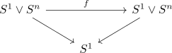
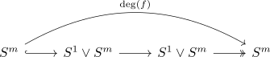

pointed automorphisms of S^1 wedge S^n
Proposition
Let $n \geq 2$, then $\mathrm{Aut}_*(S^1 \vee S^n)$ consists precisely of the endomorphisms $f: S^1 \wedge S^n \rightarrow S^1 \wedge S^n$ which
- induces $\pm 1$ on $H_1(-,\mathbb{Z})$ or $\pi_1(-)$
- whose restriction to $S^n \hookrightarrow S^1 \vee S^n \rightarrow S^1 \vee S^n$ induces on $\pi_n(-): \bigoplus_{\mathbb{Z}} \mathbb{Z} \rightarrow \bigoplus_{\mathbb{Z}} \mathbb{Z}$ a map $e_i \mapsto \mathrm{deg}(f) e_{(\mathrm{sgn}(\pi_1(f) i)+k}$ for fixed $\mathrm{deg}(f) \in \{\pm 1\}$ and $k \in \mathbb{Z}$.
Proof
A map $S^1 \vee S^n \rightarrow S^1 \vee S^n$ is an automorphism if and only if it induces an automorphism on $\pi_1$ and one on the universal cover (cf. universal cover and pi_1/pi_0 condition for equivalences, $S^1 \vee S^n$ is evidently conencted). Here $\pi_1(S^1 \vee S^n) \cong \mathbb{Z} \cong H_1(S^1 \vee S^n)$ shows the first condition.
So assume we have an endomorphism $f: S^1 \vee S^n \rightarrow S^1 \vee S^n$ which is an isomorphism upon applying $\pi_1$. Then we can write down a diagram

and use Anima slice as Functors into Anima to get a map $\tilde{f}: \bigvee_{\mathbb{Z}} S^1 \rightarrow \bigvee_{\mathbb{Z}} S^1$ in $\mathrm{Fun}(S^1, \mathrm{An}) \cong \mathrm{Fun}(B \mathbb{Z}, \mathrm{An})$ on universal covers.
Now as $f$ is a $\pi_1$ isomorphism by assumption, we may conclude that $f$ is an equivalence if and only if the $\mathbb{Z}$ equivariant $\tilde{f}: \bigvee S^n \rightarrow \bigvee S^n$ is an equivalence. This condition is equivalent to $\tilde{f}$ being an isomorphism on homology (cf homology isomorphism criterion on simply connected anima). Now Z equivariant isomorphisms on \bigoplus_Z Z shows that $H_n(\tilde{f}): e_i \mapsto \mathrm{deg}(f) e_{(\mathrm{sgn}(\pi_1(f)) i)+k}$ for fixed $\mathrm{deg}(f) \in \{\pm 1\}$ and $k \in \mathbb{Z}$. Here we may even detect $\mathrm{deg}(f)$ by degree of

On the other hand, if we have a map $g: \bigoplus_{\mathbb{Z}} \mathbb{Z} \rightarrow \bigoplus_{\mathbb{Z}} \mathbb{Z}$ given by $g(e_i) = \mathrm{deg}(f) e_{i+k}$, then we may write down a $\mathbb{Z}$ equivariant, (pointwise) equivalence $\bigvee_{\mathbb{Z}} S^n \rightarrow \bigvee_{\mathbb{Z}} S^n$ and unstraight/take the colimit to get an equivalence $S^1 \vee S^n \rightarrow S^1 \vee S^n$